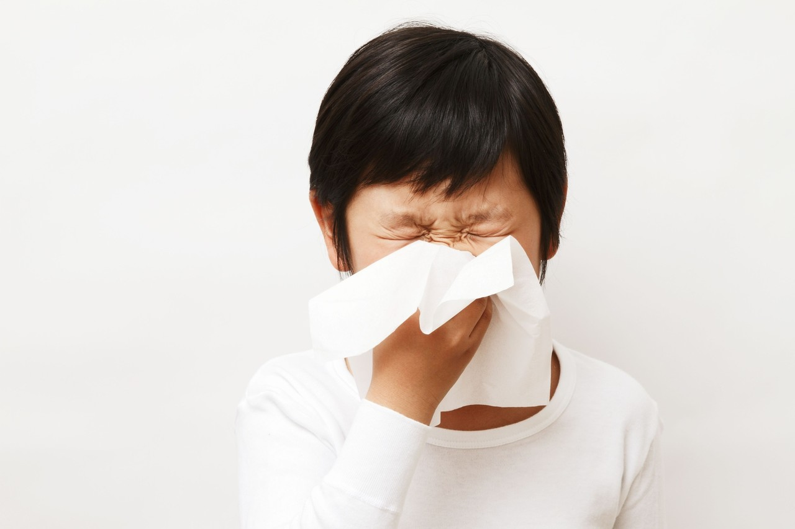
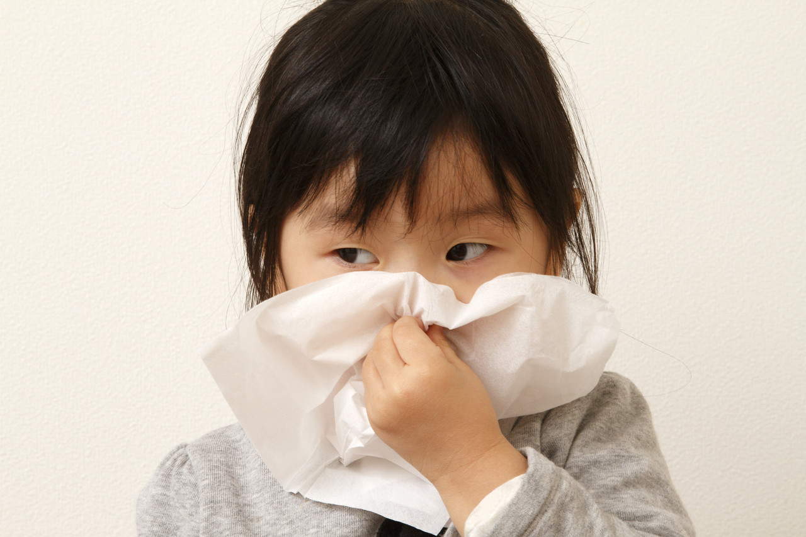

이 페이지에서 살펴볼 내용
감기 증상에 따른 치료방법들
매일 감기환자를 제대로 진료하고 있습니다.
소아는 생리적으로 발달이 미숙하고, 표현이 서투릅니다.
소아의 생리, 병리적인 특성상 ‘감기’라는 질병이 갖는 의미는 매우 중요합니다.
우리몸의 방어막인 면역체계가 얼마나 잘 성장하고 있는지를 보여주는 한모습이 감기라는 부분으로 나타나기 때문입니다.
따라서 소아의 진단과 치료는 그만큼 신중하게 접근하며, 아이의 증상과 더불어 환경, 그리고 보호자의 의견이 중요하게 다뤄집니다.
물론 발열, 구토 등의 증상에 대해 적합한 치료로 빠른 대응을 하는 것이 가장 중요합니다.
이를 위해서 적절한 서양의학적, 현대한의학적 치료의 바른 선택과정도 중요하겠죠.
저희 해온한의원은 전통적인 탕약 이외에도 시럽, 과립(가루약), 외치제(가글액, 연고) 등의 치료수단을 적절히 대비책으로 가지고 있으면서 감기 환자분들의 진료요청에 충분히 대응하고 있습니다. 대부분의 치료는 근거를 가지고 있으며, 전통적으로 효과가 있는 경우 함께 활용됩니다.
I 발열
소아과 진료는 “발열로 시작해 발열로 끝난다”라고 말해도 될 정도입니다.
발열은 우리 몸이 외부의 항원(바이러스와 같은)과 싸우고 있는 정상 면역반응의 일종입니다. 병원체(항원)과 싸우기 위해서는 면역의 왕성한 활동이 필요합니다. 감기초기에 발열이 나타나는 것은 우리 몸이 더 잘 싸우기 위해서 나타나는, 굉장히 흔하게 보이는 일종의 자연반응이라고 할 수 있습니다.
다만, 38도 이상의 발열이 있는 환아에는 먼저 발한을 통한 한방 요법을 사용합니다.
이 역시 스스로 열을 올려, 병원체(항원-대부분 바이러스)에 대항하고 있는 상태를 도와주기만 하면 됩니다.
한의원에서는 고열(38도 이상)을 수반하는 경우, 심한 오한, 근육통을 동반하는 경우 ‘마황탕, 패독산, 갈근탕’과 같은 발한약을 첫번째로 처방합니다.
이 경우 초기에는 수면시간을 제외한 3-4시간간격으로 자주 복용하는 것이 좋습니다.
한약 복용 후에,
1) 땀이 난다(소변의 양이 증가한다)
2) 37.5도이하로 해열이 된다.
중의 하나라도 보이면 복용을 중지합니다.
급성 비인두염, 인플루엔자 등의 경우라도 경증이라면 대부분 1-2일이내에 해열됩니다.
끙끙거릴 정도로 아주 발열이 심한 경우 대청룡탕 계열을 사용합니다. 건조감까지 심해진다면 백호탕, 백호가인삼탕과 같은 약이 처방됩니다.
신종플루라고 소개되는 계절형 바이러스성 독감의 경우 마황탕계열의 단독복용이 타미플루와 같은 강한 항생제보다 더 빠르게 증상의 소실과 회복을 가져온다고 보고되고 있습니다.
만약 이미 해열이 되었지만 간혹 열이 37도에서 38도 사이로 오르락 내리락 하는 경우(이를 한열왕래, 이장열이라고 합니다)에는 시호제계열을 처방합니다. 소시호탕, 시호계지탕 등과 같은 약물이 대표적입니다.
1일 2-3회 정도 해열될 때까지 연속 복용 하도록 합니다.
그럼 언제 항생제를 복용해야 하는 걸까요?
상기도감염(감기)의 원인은 대부분 Virus입니다.
다만, 세균감염의 가능성이 있기때문에 발열의 상태, 아이의 체력, 식욕, 의식 등을 충분히 관찰해야 합니다.
지나치게 항생제를 복용하는 것도 문제가 되지만, 그렇다고 꼭 필요할 때 사용을 하지 않으면 합병증이 생기거나 증상이 악화될 수 있기 때문에 정확한 사용에 대한 현명한 선택이 중요합니다. 양약을 무조건 거부하는 것보다는 현명하게 사용해야합니다.
해열제, 발한약 등에 반응이 없는 고열(38.5도 이상)이 지속되고, 인두소견에 세균감염이 의심되는 경우 항생제를 병용하는 것이 좋습니다.
이 경우에도 일본과 같은 의료선진국에서는 한약과 양약을 병용하도록 권유하고 있습니다.
I 기침, 가래
질병이 진행되고 수분(음)의 밸런스가 깨지면, 기침 증상이 나타납니다.
기침은 건성, 습성으로 유형이 나뉩니다.
목이 간지럽거나 건조하고, 목이 쉬는 경우 보음약(맥문동탕, 시박탕 등)을 사용합니다.
맥문동탕은 달고 마시기 쉬운 한약입니다. 극심한 기침이 반복되는 경우 3시간 간격으로 추가적으로 복용합니다.
시박탕은 기관지천식과 심인성기침과 같은 질병에 사용되는 경우도 있습니다.
수분(콧물, 가래 등)이 증가하며 나타나는 기침에는 거습약(소청룡탕, 마행감석탕, 오호탕, 시함탕 등)을 활용합니다.
소청룡탕은 알레르기 비염의 치료약으로 유명하지만, 호흡기 점막의 수분이 갑작스럽게 증가해서 생기는 콧물, 가래을 수반하는 가벼운 기침에도 사용됩니다.
마행감석탕은 고통스럽게 가래가 끓는 기관지염, 기관지천식에 유효합니다. 소청룡탕과 병용하는 경우도 있습니다. 야간에 기침이 심할 경우에도 대응합니다. 흉통이 있을 정도로 기침이 나오는 경우에도 시함탕과 같은 약이 처방됩니다.
기침약은 대부분 양약과의 병용도 가능합니다.

I 복통, 설사 등 소화기 감염
체액성 면역은 우리몸의 1차 방어막과 같은 역할을 하는 면역계입니다.
감기 종류 중 수분의 밸런스가 깨져 오는 증상중에서는 위장염이 있습니다.
호흡기점막, 소화기점막을 이루는 IgA와 같은 면역세포가 제 역할을 하지 못하는 경우 급성기에 구토, 설사, 복통, 소화불량이 나타납니다. 구토가 있으면서 갈증이 있고, 수분을 섭취하고자하여 물을 마시면 바로 토하는 경우 오령산계열의 처방을 적용합니다.
중증의 물 설사가 있다면 양방요법(수액)의 병용도 중요합니다.
아이의 나이가 어린 경우고 탈수증상이 염려되는 경우 전해질의 균형을 맞추기 위해 수액요법과 같은 양방요법의 병용이 추천되는 경우도 있습니다. 특히 세균성장염이 의심되는 경우 항생제를 병용해야 합니다. (원칙적으로는 대변 배양을 시행해야 하나 현실적으로 양방 일반 의원급에서는 시행되기 어려운 부분이 있습니다.)
감기 뒤끝에 나타나는 아급성 설사(하리)가 생기는 경우도 있습니다.
복부가 차고, 손발이 차지면 인삼탕계열입니다. 소화불량과 뱃속의 부글거림이 심하면 사심탕계열, 배가 아프면서 경련이 있다면 계지가작약탕계열을 사용합니다. 노로바이러스, 로타바이러스 등의 바이러스성 위장염의 경우 계지인삼탕과 오령산계열을 4시간간 간격으로 복용하는 경우도 있습니다.
바이러스성 장염의 경우 감기와 유사합니다. 심한 탈수가 없다면 한약복용으로 더 빠르게 회복된다고 보고되고 있습니다.
항생제를 복용하기만 하면 감기 뒤끝에 설사가 나타나는 아이들이 있습니다.
이경우 위장기능이 약한데에 너무 강한 약을 써서 점막면역이 상해 나타나는 것으로 위장의 기능회복이 중요합니다.
물설사(하리)가 매우 빈번하고 몸이 차지며, 일어나기 힘들경우 진무탕, 곽향정기산, 건중탕 계열이 처방됩니다.
I 비부비동염, 중이염 등 합병증
콧물, 코막힘, 코증상이 심해지거나, 귀통증이 갑자기 생기는 경우라면?
많은 한의원에서 급성 비염의 경우 바이러스성, 세균성, 알레르기성에 상관없이 초기에 소청룡탕을 처방하는 경우가 많습니다.
만약 감기약으로 항히스타민약을 복용 후 코막힘이 악화, 기침, 호흡곤란을 일으키는 경우에도 처방됩니다.
코막힘이 심하고 진한 콧물, 가래가 동반된다면 갈근탕가천궁신이, 신이청폐탕이 유효합니다.
비염, 부비동염, 중이염이 만성화(1개월 이상 이환)된 경우라면 항생제로 인핸 내성과 부작용에 주의해야합니다.
이비인후과, 소아과에서 부비동염, 중이염의 치료를 받고 있으나 코막힘, 콧물, 가래가 확실히 나아지지 않는 경우 한약을 병용합니다.
한약을 병용하는 것으로 항생제의 내복양이 줄어든다면 감사한 일이겠죠.

이 안내는 건강에 대한 이해를 돕는 참고 정보입니다. 증상과 질환에 대한 정확한 판단은 의료진의 진료가 필요합니다.